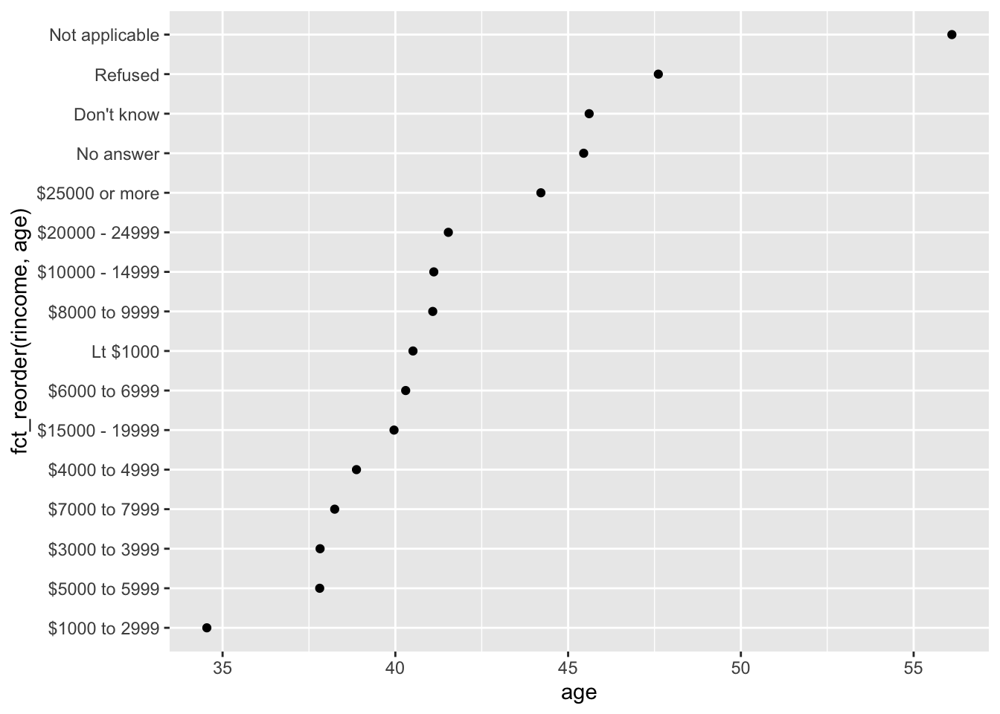
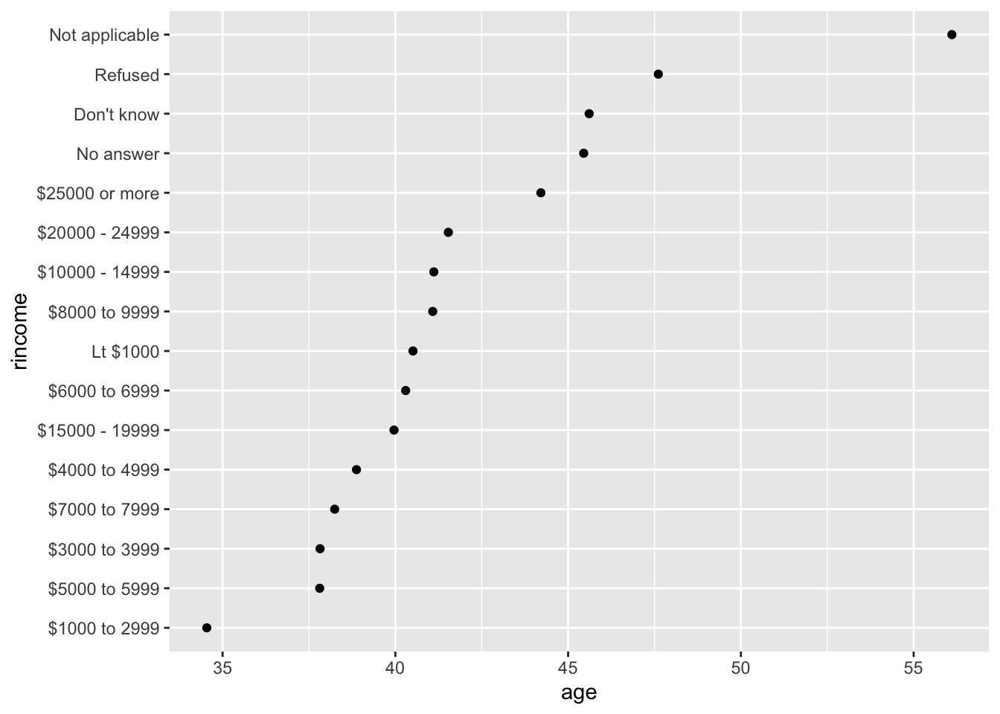
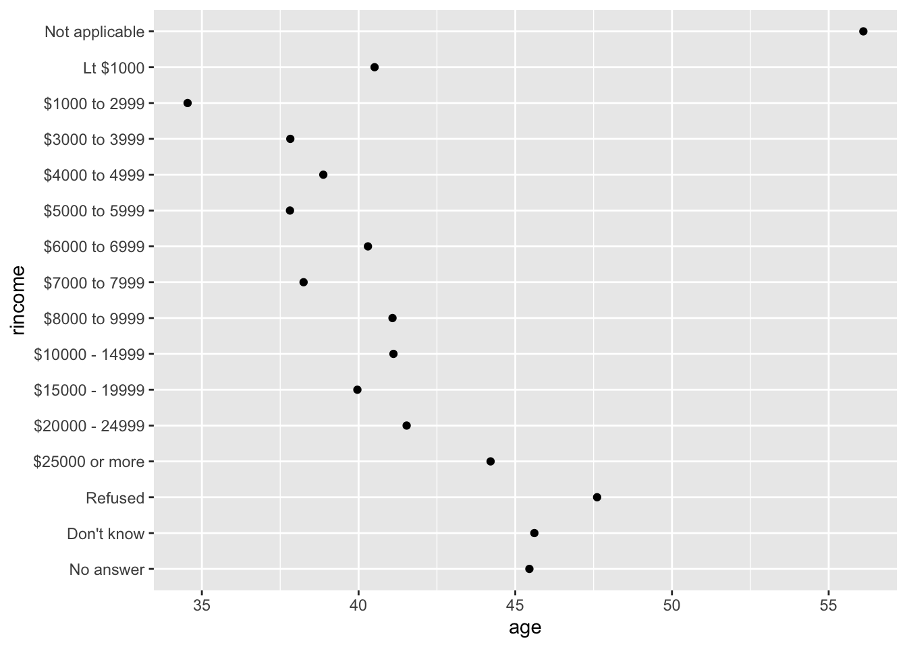
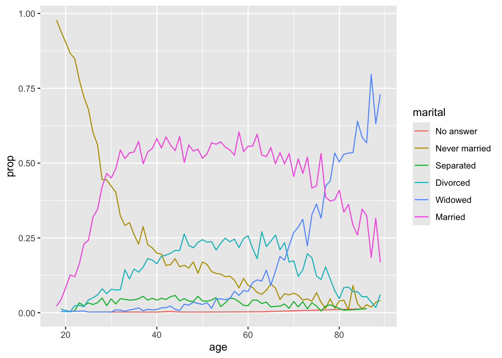
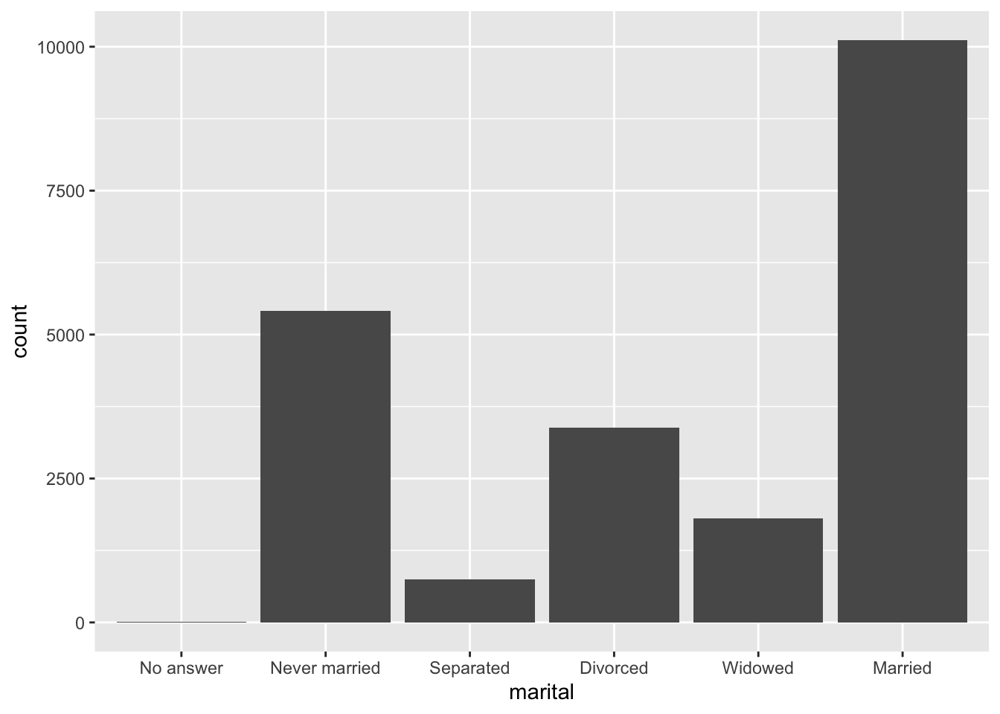
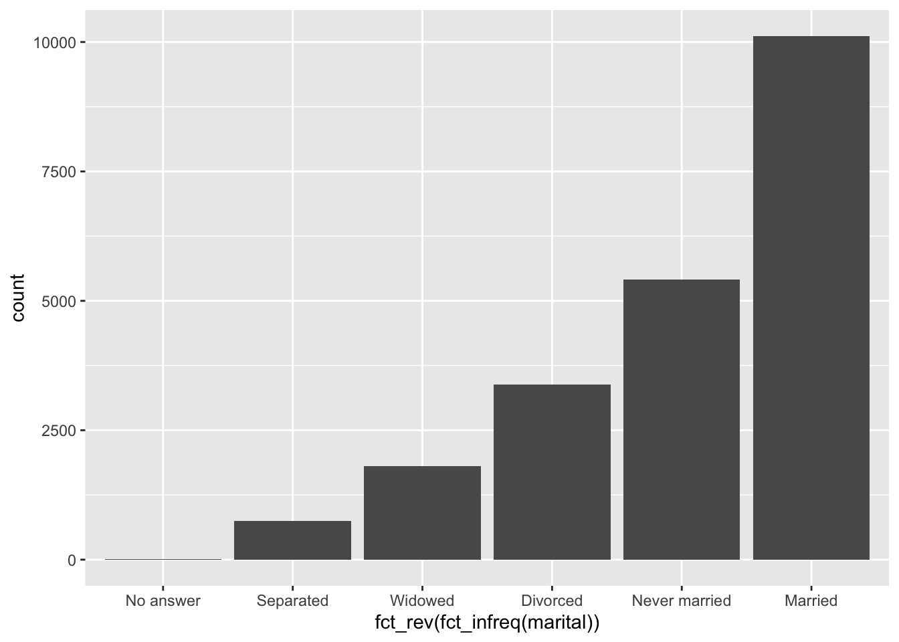
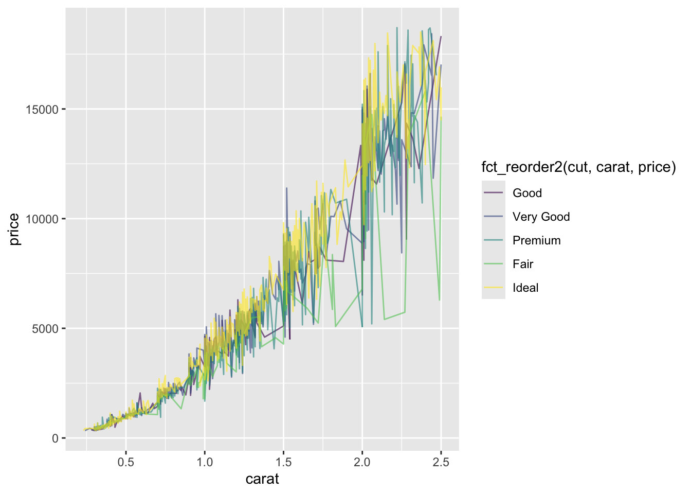

# e.g.
factor(c(0, 1, 1, 1, 0), labels=c('Female', 'Male'))[1] Female Male Male Male Female
Levels: Female MaleA factor:
We can create them using the factor() function, which takes the format: factor(vector, levels, labels)
# e.g.
factor(c(0, 1, 1, 1, 0), labels=c('Female', 'Male'))[1] Female Male Male Male Female
Levels: Female MaleWe can make factors that have an inherent order
monthLevels <- c("Jan", "Feb", "Mar", "Apr", "May", "Jun",
"Jul", "Aug", "Sep", "Oct", "Nov", "Dec")
data <- factor(c("Dec", "Jun", "Apr"))
dataBut sorting them may not give us what we expect
sort(data)[1] Apr Dec Jun
Levels: Apr Dec JunmonthLevels <- c("Jan", "Feb", "Mar", "Apr", "May", "Jun",
"Jul", "Aug", "Sep", "Oct", "Nov", "Dec")
data <- factor(c("Dec", "Jun", "Apr"), levels = monthLevels)
sort(data)[1] Apr Jun Dec
Levels: Jan Feb Mar Apr May Jun Jul Aug Sep Oct Nov DecStrings that aren’t in your levels are silently set as NA
factor(c("Dec", "Jum", "Apr"), levels = monthLevels)[1] Dec <NA> Apr
Levels: Jan Feb Mar Apr May Jun Jul Aug Sep Oct Nov DecFactors also provide an automatic error control, something that is extremely useful when programming and managing large amounts of data. However, we may not want such NAs to go unnoticed!
By contrast, readr’s parse_factor() will warn you
readr::parse_factor(c("Dec", "Jum", "Apr"), levels = monthLevels)Warning: 1 parsing failure.
row col expected actual
2 -- value in level set Jum[1] Dec <NA> Apr
attr(,"problems")
# A tibble: 1 × 4
row col expected actual
<int> <int> <chr> <chr>
1 2 NA value in level set Jum
Levels: Jan Feb Mar Apr May Jun Jul Aug Sep Oct Nov DecIf you ever need to access the set of valid levels directly, you can do so with levels(). The function nlevels() can also be used to show the number of levels. Factors allow us to set a semantic order rather than the alphabetical one associated with character vectors. This can be quite handy when our categorical data has an inherent idea of order, like the months of the year or the quality level of a diamond cut.
# nothing special needs to be done as alphabetical is the default ordering for levels
marauders <- factor(c('moony', 'wormtail', 'padfoot', 'prongs'))# we could pass the order we want to levels explicitly
patronus <- factor(c('stag', 'dog', 'otter'), levels = c('stag', 'dog', 'otter'))
# we could also have used forcats::fct_inorder()
patronus <- forcats::fct_inorder(c('stag', 'dog', 'otter'))levels(marauders)[1] "moony" "padfoot" "prongs" "wormtail"levels(patronus)[1] "stag" "dog" "otter"Using diamonds
dplyr::count() to show how many rows there are for each factor level in the ‘cut’ column. Is it any different to using forcats::fct_count()?# using dplyr::count()
diamonds |>
dplyr::count(cut)# using forcats::fct_count()
forcats::fct_count(diamonds$cut)The only differences here are that dplyr takes a dataframe or tibble, while forcats takes a vector, and some formatting of the output. Both provide useful counts of the levels in our factor. This is often one of the first things we do when encountering a factor!
dplyr::arrange(desc()) to sort the cut column in descending order. What were the rows sorted by?head(dplyr::arrange(diamonds, desc(cut)))Our output from arrange() is sorted by the order of the levels of our factor. This is different to strings in character vectors, which are sorted alphabetically. We therefore need to be careful when sorting to check our output is as expected!
Why should I care about factors?
contrasts() function.Forcats is an excellent package for dealing with factors because:
It is, however, strictly for humans.
Nowadays it is a common task to extend our datasets based on new results or changes on the criteria used, or rearrange the levels to improve the readability of our data when plotted. In this matter, it is handy to know that we can change both the order and levels of a defined factor, and how to do it.
For some of these examples we are going to use forcats::gss_cat, a dataset created from a long-running US survey conducted by the independent research organization NORC at the University of Chicago.
forcats::fct_relevel() and forcats::fct_inorder()
fct_inorder()
# sets the levels to be the
# order they appear in the vector
head(fct_inorder(gss_cat$marital))[1] Never married Divorced Widowed Never married Divorced
[6] Married
Levels: Never married Divorced Widowed Married Separated No answerfct_relevel()
# moves one or more levels to the start
head(fct_relevel(gss_cat$marital, 'Married'))[1] Never married Divorced Widowed Never married Divorced
[6] Married
Levels: Married No answer Never married Separated Divorced Widowedforcats::fct_recode()
For changing the names of existing levels by hand
myFactor <- factor(c("M", "F", "O", "M", "P", "M",
"F", "F", "F", "M", "O", "P"))
myFactorPub <- fct_recode(myFactor, male = "M", female = "F",
unknown = "O", unknown = "P")
myFactorPub [1] male female unknown male unknown male female female female
[10] male unknown unknown
Levels: female male unknownforcats::fct_reorder()
Compare the output of the two graphs below:


forcats::fct_reorder():
It can be applied within a ggplot2 call, like below:
gss_cat |>
group_by(marital) |>
summarise(tvhours = mean(tvhours, na.rm = TRUE)) |>
ggplot(aes(tvhours, fct_reorder(marital, tvhours))) + # <<<---
geom_point()It could also be used before the ggplot2 using mutate, like below. In practice, it’s much more common to reorder factors for plotting ‘on the fly’ by doing it inside the ggplot2 call
gss_cat |>
group_by(marital) |>
summarise(tvhours = mean(tvhours, na.rm = TRUE)) |>
mutate(marital = fct_reorder(marital, tvhours)) |> # <<<---
ggplot(aes(tvhours, marital)) +
geom_point()Using gss_cat
nlevels(gss_cat$relig)[1] 16levels(fct_inorder(gss_cat$denom)) [1] "Southern baptist" "Baptist-dk which" "No denomination"
[4] "Not applicable" "Lutheran-mo synod" "Other"
[7] "United methodist" "Episcopal" "Other lutheran"
[10] "Afr meth ep zion" "Am bapt ch in usa" "Other methodist"
[13] "Presbyterian c in us" "Methodist-dk which" "Nat bapt conv usa"
[16] "Am lutheran" "Nat bapt conv of am" "Am baptist asso"
[19] "Evangelical luth" "Afr meth episcopal" "Lutheran-dk which"
[22] "Luth ch in america" "Presbyterian, merged" "No answer"
[25] "Wi evan luth synod" "Other baptists" "Other presbyterian"
[28] "United pres ch in us" "Presbyterian-dk wh" "Don't know" # using fct_reorder()
gss_cat |>
group_by(rincome) |>
summarise(
age = mean(age, na.rm = TRUE),
tvhours = mean(tvhours, na.rm = TRUE),
n = n()) |>
ggplot(aes(age, fct_reorder(rincome, age))) +
geom_point()
# using fct_relevel()
gss_cat |>
group_by(rincome) |>
summarise(
age = mean(age, na.rm = TRUE),
tvhours = mean(tvhours, na.rm = TRUE),
n = n()) |>
mutate(rincome = fct_reorder(rincome, age)) |>
ggplot(aes(age, rincome)) +
geom_point()
# using fct_relevel()
gss_cat |>
group_by(rincome) |>
summarise(
age = mean(age, na.rm = TRUE),
tvhours = mean(tvhours, na.rm = TRUE),
n = n()) |>
ggplot(aes(age, rincome)) +
geom_point()
gss_cat |>
mutate(rincome = fct_reorder(rincome, age))Warning: There was 1 warning in `mutate()`.
ℹ In argument: `rincome = fct_reorder(rincome, age)`.
Caused by warning:
! `fct_reorder()` removing 76 missing values.
ℹ Use `.na_rm = TRUE` to silence this message.
ℹ Use `.na_rm = FALSE` to preserve NAs.While both of these look nice, the second one is probably more appropriate. This is because our y axis has some inherent order to it, and changing this makes understanding the plot a bit more difficult. Moving ‘Not applicable’ to the beginning to be with similar categories is helpful, however.
forcats::fct_reorder2()
Compare the two plots below:


forcats::fct_reorder2()
forcats::fct_reorder()You can see its use below:
gss_cat |>
filter(!is.na(age)) |>
count(age, marital) |>
group_by(age) |>
mutate(prop = n / sum(n)) |>
ggplot(aes(age, prop, colour = fct_reorder2(marital, age, prop))) + # <<<---
geom_line() +
labs(colour = "marital")Other useful Forcats functions
fct_rev() reverses the order of the levelsfct_lump() combines the least common factor levels into ‘other’fct_expand() adds new levels to your factorsfct_relabel() automatically relabels factor levelsfct_infreq() orders factors from most frequent to least frequentUsing gss_cat
head(fct_recode(gss_cat$partyid,
`Not strong republican` = 'Not str republican',
`Independent, near democrat` = 'Ind,near dem',
`Independent, near republican` = 'Ind,near rep'))[1] Independent, near republican Not strong republican
[3] Independent Independent, near republican
[5] Not str democrat Strong democrat
10 Levels: No answer Don't know Other party ... Strong democrat# original
gss_cat |>
ggplot(aes(marital)) +
geom_bar()
# using fct_infreq() and fct_rev()
gss_cat |>
ggplot(aes(fct_rev(fct_infreq(marital)))) +
geom_bar()
Using gss_cat
diamonds |>
filter(color == 'J', depth > 55, carat <=2.5) |>
ggplot(aes(carat, price, col=fct_reorder2(cut, carat, price))) +
geom_line(alpha=0.6)
Changing plot attributes like the legend title will be covered at a later date.
At times, it may seem necessary to convert from a factor to numeric, particularly if you are using a plotting function that requires numeric data. However, as.numeric(my_factor) should not be used for these purposes.
Errors may be obvious:
x <- factor(c(1, 1, 0, 0, 1, 0, 1, 1, 1, 0))
as.numeric(x) [1] 2 2 1 1 2 1 2 2 2 1Here, the values we passed are 0 or 1, but R is 1-indexed, meaning all counting starts from 1, not 0. Internally, R represents the coding of this factor as 1/2, even though we passed the values 0/1.
Errors can also be more subtle:
x <- factor(c(1, 1, 2, 5, 3, 3, 1, 6, 5, 1, 6, 2))
as.numeric(x) [1] 1 1 2 4 3 3 1 5 4 1 5 2The latter situation is common if you have ordered categorical data, for example levels of education in a population, coded as numbers 1 to 6. Unfortunately, when we created our factor, we failed to specificy the levels. As nobody with the category 4 happens to be present, the internal coding of the factor levels above 4 were shifted down one. Our output from as.numeric() is not the vector we passed in.
When coercing factors to other types, note
as.numeric() returns R’s internal codes for the factors, not their valuesx <- factor(c(1, 1, 2, 5, 3, 3, 1, 6, 5, 1, 6, 2))
as.numeric(as.character(x)) [1] 1 1 2 5 3 3 1 6 5 1 6 2Our output now represents the values we passed in!
YYYY-MM-DD, MM/DD/YYYY, or even DD-MM-YYYY.class("2024-10-20") # a simple date string[1] "character"class(as.Date("2024-10-20")) # a date object[1] "Date"typeof(as.Date("2024-10-20")) # but a double under the hood[1] "double"ymd() converts strings to dates in the format YYYY-MM-DD (year-month-day)mdy(), dmy(), ymd_hms() etc.today() returns the current dateyear(), month(), day() extract the year, month, and day from a date objectinterval() creates an interval between two datestime_length(), which calculates the length of an interval in a specified unit# Create two date objects
start_date <- ymd("2015-05-15")
end_date <- ymd("2024-10-20")
date_interval <- interval(start_date, end_date)
print(time_length(date_interval, "years"))[1] 9.43287671233johns_dob <- ymd('1983-09-04')
johns_dob[1] "1983-09-04"interval(johns_dob, ymd('2020-06-06')) |>
time_length('years')[1] 36.7540983607interval(johns_dob, today()) |>
time_length('years')using the lakers dataset which comes with lubridate
some_function below:lakers |>
as_tibble() |>
mutate(date = ymd(sprintf("%08d", date)))using the economics dataset from ggplot2
economics |>
mutate(year = year(date), month = month(date))economics |>
mutate(time_since_nyse = interval(ymd('1792-05-17'), date) |>
time_length('years'))This is the most powerful tool of every data scientist, and, at the same time, the hardest to master. Everyone has their own opinions and programming styles, but there is some standardization that you should follow to make your code easier to read by others and, most importantly, to your future self. These two terms should be part of your programmer mantra: readability and reusability.
Functions in R:
func_name <- function(arg1, arg2, arg3) {
# function body
}As you are used to seeing when you take a look at the help of other functions, we can type the variables we expect to be passed to our new function between the parenthesis. The code that will be executed every time we call our function (also known as the body) has to go between {}. Remember to type () after the name of your function in order to execute it. You can also take advantage of the standard return rule: a function returns the last value that it computed. However, it is almost always best to use an explicit return() statement at the end of a function. Code should always be clear. Explicit is better than implicit.
It also is important to know that the variables declared inside the function only exist whilst the function is being executed. Additionally, if we pass a variable created outside the function as one of its arguments, its value will not be changed even if it is edited within the function. This is what is called pass by value.
call your functions after creating them to check their output
stub_func <- function(){}
# you might also want to add a warning
stub_func <- function(){
warning('function is empty')
}return() statement. Choose an appropriate name.three_func <- function(x=2, y=3){
z <- x**y
return(z)
}# output is the same as before
three_func <- function(){
3
}The output of the above two functions is identical. This is because, as mentioned above, R will return the most recently evaluated expression if no return() statement is given. Using an explicit return() statement, as in the first version, is preferred. Explicit is better than implicit.
my_divide() which takes two arguments, ‘x’ and ‘y’ and returns x divided by y. Use an explicit return statement.my_divide <- function(x, y){
return(x/y)
}my_divide() function so that there is another argument called ‘tol’. Set it to a very low value, and add it to y before dividingmy_divide <- function(x, y, tol = 0.00000001){
y <- y + tol
return(x/y)
}Here we set the default value for tol in function(). This means whenever the function is run, that value is always used for tol unless someone overwrites it by passing a new value in the function call. You can make it a lot easier for someone else to run your functions by setting sensible default values if it is appropriate to do so.
Try to decipher the following code below
df <- data.frame(a = rnorm(10), b = rnorm(10), c = rnorm(10), d = rnorm(10))
df$a <- (df$a - min(df$a, na.rm = TRUE)) / (max(df$a, na.rm = TRUE) - min(df$a, na.rm = TRUE))
df$b <- (df$b - min(df$b, na.rm = TRUE)) / (max(df$b, na.rm = TRUE) - min(df$a, na.rm = TRUE))
df$c <- (df$c - min(df$c, na.rm = TRUE)) / (max(df$c, na.rm = TRUE) - min(df$c, na.rm = TRUE))
df$d <- (df$d - min(df$d, na.rm = TRUE)) / (max(df$d, na.rm = TRUE) - min(df$d, na.rm = TRUE))The answer to the first question is that this code rescales each column of the randomly generated dataframe to have a range from 0 to 1. The answer to the second question is trickier: the code finishes successfully but if you inspect the line corresponding to column b, you might notice that the purpose of the code is not fulfilled. In fact, during the copy and paste of the column I forgot to replace the last column from a to b.
In the previous example, it is easy to spot the code that would be extremely useful to be transformed into a function. The first step once we have extracted the desired part is to detect and replace the variables by arguments:
rescale <- function(x) {
return((x - min(x, na.rm = TRUE)) / (max(x, na.rm = TRUE) - min(x, na.rm = TRUE)))
}We can now reimplement the previous code using our new function:
df <- data.frame(a = rnorm(10), b = rnorm(10), c = rnorm(10), d = rnorm(10))
df$a <- rescale(df$a)
df$b <- rescale(df$b)
df$c <- rescale(df$c)
df$d <- rescale(df$d)There is still room for improvement. In this case our dataset has only four rows, but even min() and max() can take a lot of time to run if we have hundreds of thousands of rows. Thus, we can create an auxiliary variable to compute min() only once:
rescale <- function(x) {
y <- min(x, na.rm = TRUE)
return((x - y) / (max(x, na.rm = TRUE) - y))
}With a function created only once and used in several places, any change on the specifications of the problem can be easily transferred everywhere in the code.
There are a few details that we have disregarded during the creation of our previous function. First, we have created the variables with a single character, rather than using meaningful names. It is time to change that:
rescale <- function(column) {
min_value <- min(column, na.rm = TRUE)
return((column - min_value) / (max(column, na.rm = TRUE) - min_value))
}What do you think of the new names we have selected for our variables? Do you think they improve its readability?
Next, it is always advisable to write comments in our code. We have implemented this function just now so we are still aware of what is going on. This can change in the future, or another person may want to use our code, so it is important to add comments to ease the comprehension of the code:
rescale <- function(column) {
# rescale vector to the range from 0 to 1
min_value <- min(column, na.rm = TRUE)
return((column - min_value) / (max(column, na.rm = TRUE) - min_value))
}Finally, we need to be careful with our function name. rescale() is a clear name, and it is a good idea to use verbs as function names. However, “rescale” has probably been used by other people in other packages. It is a common word for a common operation. We should either choose a less common word, or put our function in a package (easily done in R, but not covered here) so that we can explicitly call it with my_package::rescale() to avoid any confusion.
In general:
source('my_functions_file.R') to load them.When to write a function
This is easily the simplest thing to remember, but the hardest to implement
When NOT to write a function
summarise()!~) is used to create a lambda function, and the dot (.x) is used to refer to the input. used to refer to the input - this is the same as .x. and .x are common conventions# example use of an anonymous function with summarise
gapminder |>
group_by(continent) |>
summarise(across(where(is.numeric), ~ mean(.x, na.rm = TRUE))) |>
head(3)~ mean(.x, na.rm = TRUE)is equivalent to
function(.x) {
mean(.x, na.rm = TRUE)
}An if statement allows you to conditionally execute code. It looks like this:
if (condition) {
# code executed when condition is TRUE
} else {
# code executed when condition is FALSE
}To get help you need to surround it in backticks: ?`if`. Take into account that this help is not particularly helpful if you are not already an experienced programmer. The condition must evaluate to either TRUE or FALSE. In R, the way to combine multiple conditions is using a single & for and, or a single | for or.
It is also possible to use || (or) and && (and) to combine multiple logical expressions. However, these operators (&& and ||) are short-circuiting: as soon as || sees the first TRUE it returns TRUE without computing anything else. As soon as && sees the first FALSE it returns FALSE. This knowledge can be quite handy when you become a more experienced programmer. When first starting out though, it can be confusing! At the minimum, be aware that & and && are not the same thing, and you most likely need to use & or |. If you’re unsure, look it up, and check your output with ‘dummy’ examples to make sure it works as expected.
Here is a simple example of a condition within a function:
myFunction <- function(x) {
if (x > 3) {
return(x - 3)
} else {
return(x)
}
}You can concatenate multiple conditions in a simple structure:
if (x > 0) {
print("Positive")
} else if (x < 0) {
print("Negative")
} else {
print("Zero")
}But if you need to encode a method that involves a very long series of chained if statements, you should consider rewriting. One useful technique is the switch() function: it allows you to evaluate selected code based on position or name. Here is an example:
function(x, y, op) {
switch(op,
plus = x + y,
minus = x - y,
times = x * y,
divide = x / y,
stop("Unknown operation!")
)
}if-else statementsifelse() lets us use vectorised if-else statements (note, dplyr has a version called dplyr::if_else() that’s a bit stricter)switch() functiondplyr::case_when() handles multiple vectorised if_else() statements# example use of case_when to simplify multiple if_else statements
gapminder |>
mutate(lifeExp_category = case_when(
lifeExp < 50 ~ "Low",
lifeExp >= 50 & lifeExp <= 70 ~ "Medium",
lifeExp > 70 ~ "High"
)) |>
head(3)Answers not shown here as it is fundamentally interactive!
my_add() that takes two arguments, x and y and returns their sum (do not paste it into the terminal!)source("path/to/script.R")my_add(2, 3)testthat packagemy_multiply() that takes two arguments, x and y and returns their productmy_multiply <- function(x, y) {
return(x * y)
}my_multiply(2, 3) returns 6my_multiply <- function(x, y) {
return(x * y)
}
testthat::test_that("my_multiply() works as expected",
{
testthat::expect_equal(my_multiply(2, 3), 6)
})readr or fread, but R has a long history of debate and frustration over reading-in strings as factors in base R.